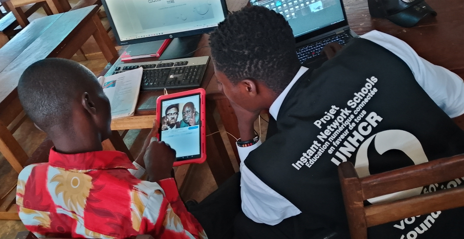
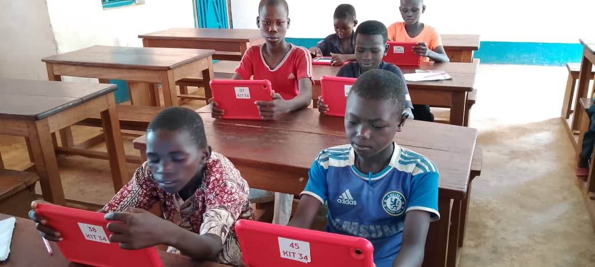
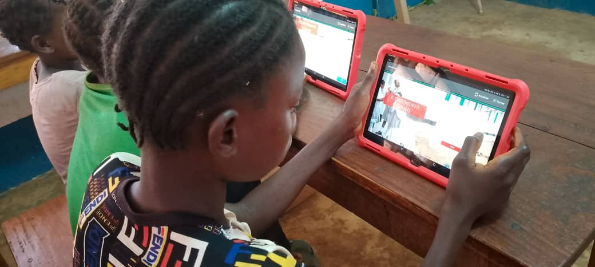
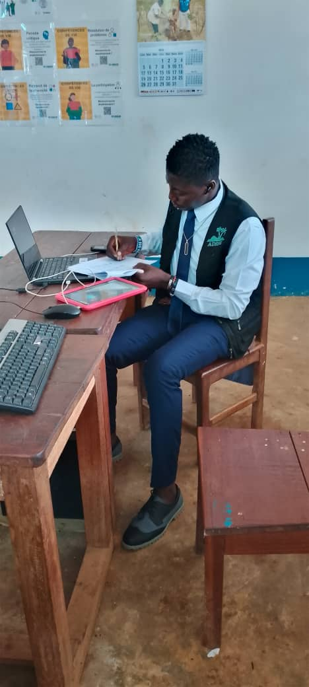

À propos de l’INS
Une Instant Network School (INS) a pour rôle de fournir un accès à l’éducation numérique et à Internet dans les zones touchées par les crises humanitaires (comme les camps de réfugiés ou les zones isolées).
Elle permet aux apprenants, enseignants et communautés locales de suivre des cours en ligne, de s’initier aux TIC (Technologies de l’Information et de la Communication) et de développer des compétences utiles pour leur avenir.
📚 Rôles spécifiques d’une INS
- Faciliter l’apprentissage numérique : Mettre à disposition des tablettes, ordinateurs et connexion Internet pour permettre le suivi des cours en ligne.
- Renforcer les capacités des enseignants : Former les enseignants à l’utilisation des outils numériques et des plateformes éducatives.
- Promouvoir l’inclusion et l’égalité d’accès : Offrir à tous les jeunes (filles, garçons, réfugiés, communautés d’accueil) la même opportunité d’apprendre.
- Encourager l’autonomie et l’innovation : Aider les apprenants à développer la créativité, la recherche, et les compétences numériques pratiques.
- Soutenir la communauté éducative : Servir d’espace communautaire pour la recherche, la formation, et les activités éducatives (numérisation, jeux pédagogiques, projets collaboratifs, etc.).
- Contribuer à la continuité de l’éducation en situation de crise : Garantir que les enfants et jeunes puissent continuer à apprendre même dans des conditions difficiles.
📸 Galerie d’activités
Voici quelques images illustrant les activités réalisées au sein de l’INS du Complexe Scolaire Camp Bili :




📞 Contact
Pour plus d’informations, contactez Coach Pitshou LISIMO l’INS du Complexe Scolaire Camp Bili :
💬 Contacter sur WhatsApp